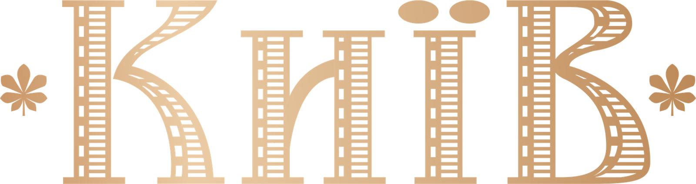
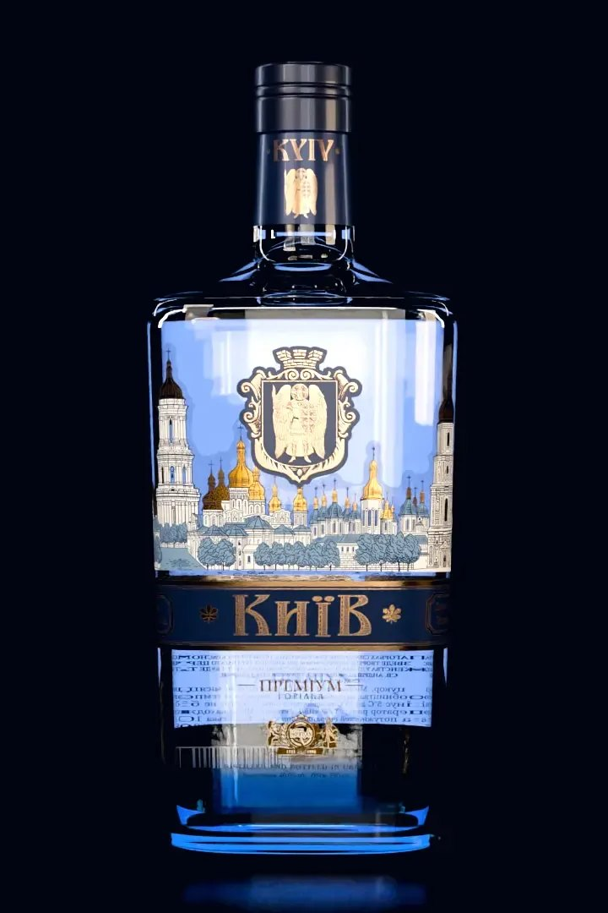
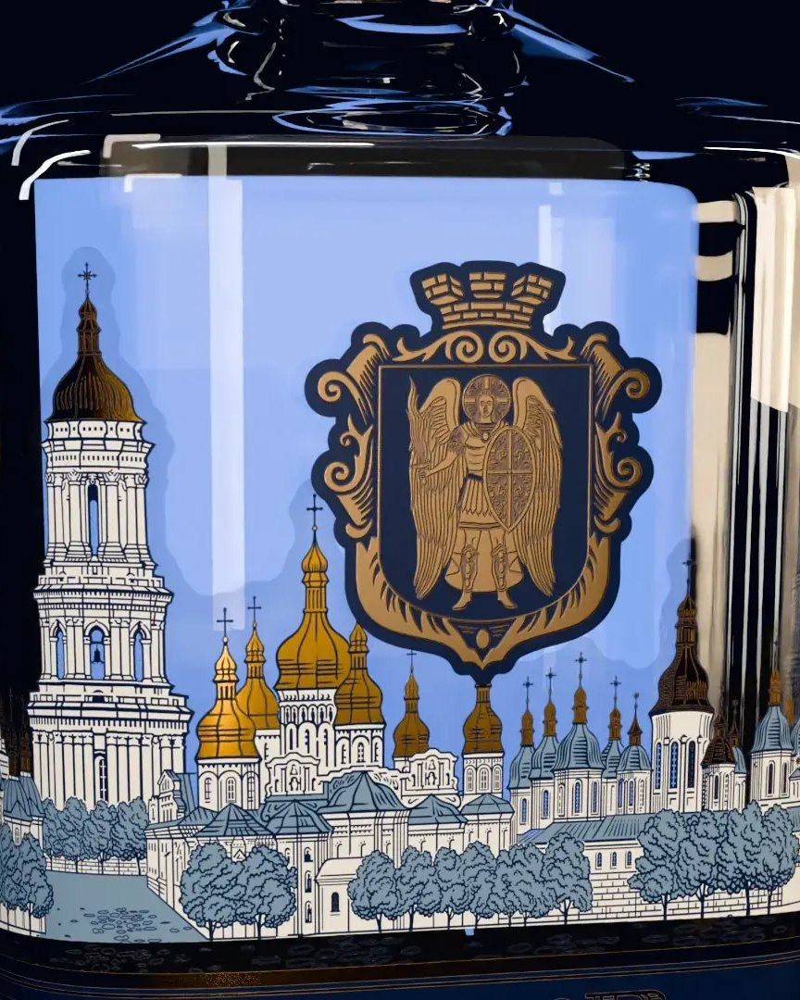
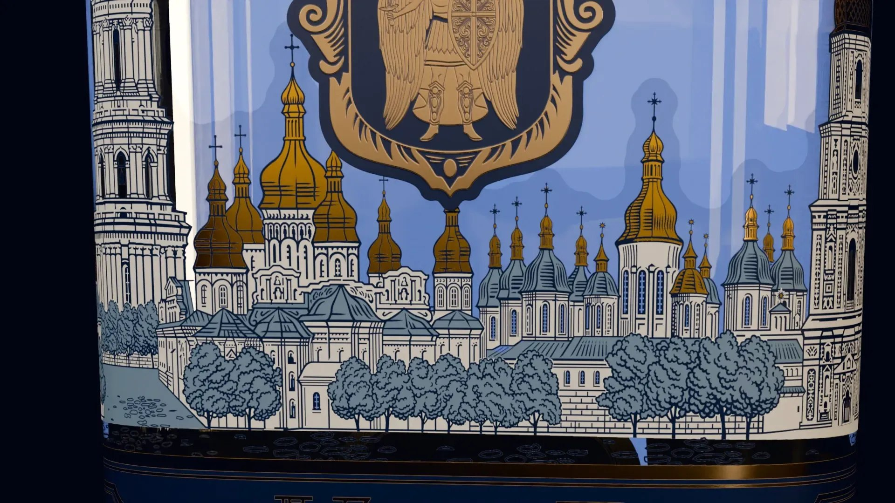
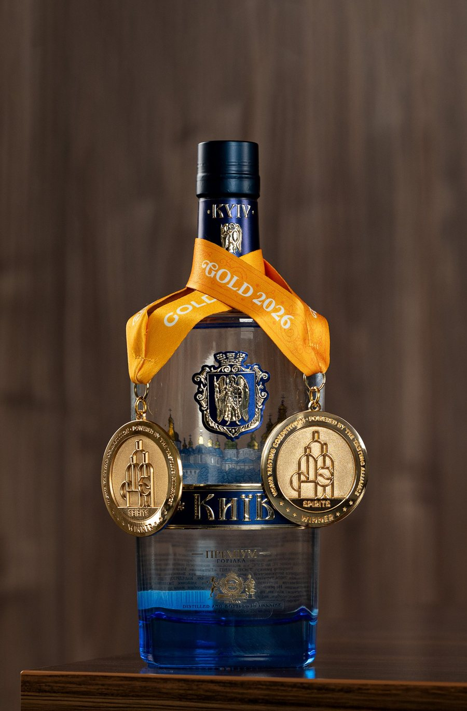
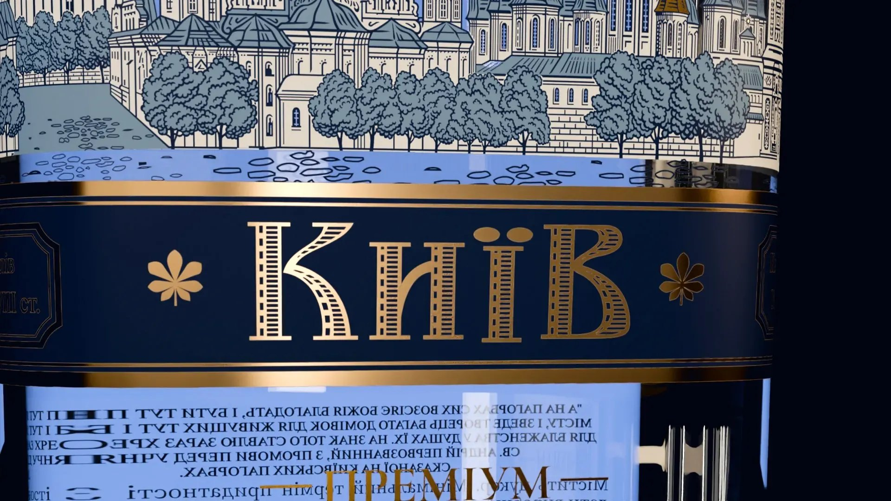
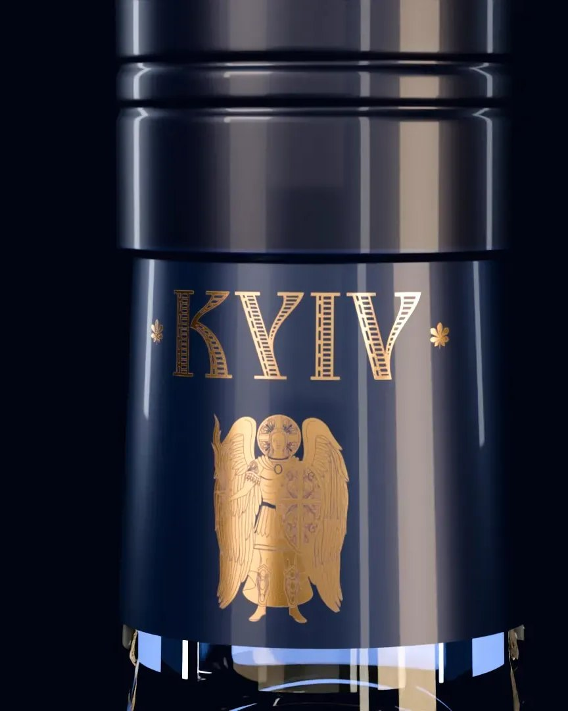
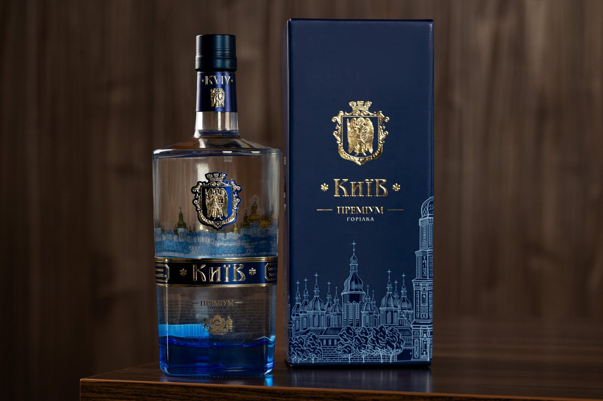

Breakfast Martini
Лондон, 1996. Бармен Сальваторе Калабрезе придумав його після сніданку з тостом і апельсиновим мармеладом.
KYIV · Cointreau · лимонний фреш · апельсинова заготовка
Збити з льодом, подати з тостом із мармеладом.

Сайт містить інформацію про алкогольні напої і призначений лише для осіб, які досягли 18 років.
Повертайтесь, коли вам виповниться 18.
HETMAN · Львів
Дух столиці. Визнання світу.


Про горілку
Горілка KYIV — преміальна горілка від HETMAN, львівського виробника з 30-річною історією. Оригінальний дизайн і висока якість творять унікальне поєднання, яке два роки поспіль відзначали золотом у США.
Дух столиці
KYIV увібрала незламний дух, культурне багатство та велич столиці України. Ручне виготовлення, декорована пляшка та металізована етикетка роблять її прикрасою будь-якого моменту — це пляшка, яку хочеться зберегти.
Якість
Завдяки багаторічному досвіду, карпатській воді та фільтрації гірським кришталем HETMAN створює горілку з бездоганно м'яким і стабільним смаком.

Київ на склі
Лавра, Софія і герб столиці — на кожній пляшці.

Нагороди
Два роки поспіль — золото в США
Українську горілку KYIV відзначили золотими медалями на WSWA Access LIVE — найбільшій щорічній виставці Асоціації оптовиків вина й алкоголю США. Продукти оцінювали незалежні експерти за смаком, ароматом, чистотою та дизайном.
Смак
Подавати охолодженою — так смак розкривається найкраще.

Як подавати
П'ять світових класичних коктейлів в авторській подачі Сергія Зімєліхіна, креативного директора HETMAN. У кожному свій характер: апельсиновий, лимонний, оливковий, тропічний і кавовий.
Лондон, 1996. Бармен Сальваторе Калабрезе придумав його після сніданку з тостом і апельсиновим мармеладом.
Збити з льодом, подати з тостом із мармеладом.
Сан-Франциско, 1970-ті, бар Henry Africa's. Назва походить від лимонних льодяників.
Збити з льодом, гарнір — лимонна монетка.
Нью-Йорк, 1901, Waldorf Astoria: одна з ранніх версій Martini з оливками. Найближчий до класичного Martini.
Перемішати з льодом і подати в охолодженому келиху.
Лондон, початок 2000-х, бармен Дуглас Анкра. Перша назва — Maverick Martini.
Збити з льодом, долити шампанське прямо в келих.
Лондон, 1980-ті, бармен Дік Бредселл. Перша назва — Vodka Espresso.
Збити з льодом, прикрасити трьома кавовими зернами — символами здоров'я, достатку та щастя.

Подарунок
KYIV у вишуканій сувенірній упаковці — доречний подарунок партнерам, колегам і друзям. Українська горілка з міжнародними нагородами, яку не соромно подарувати в будь-якій країні світу.
Де придбати
Шукайте KYIV у мережах та інтернет-магазинах по всій Україні.

Контакти
40%, пляшка 0,75 л.
HETMAN — львівський виробник з 30-річною історією, на власному заводі у Львові.
Охолодженою — чистою або в коктейлях: Breakfast Martini, Lemon Drop Martini, Dirty Martini, Porn Star Martini, Espresso Martini.
Так, горілка KYIV випускається у вишуканій сувенірній упаковці.
У мережах та інтернет-магазинах по всій Україні — дивіться блок «Де придбати».